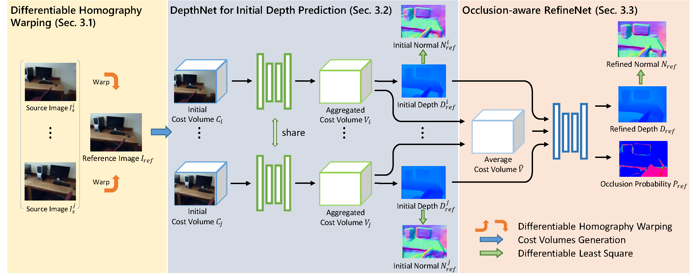

Occlusion-Aware Depth Estimation with Adaptive Normal Constraints
Xiaoxiao Long1 Lingjie Liu2 Christian Theobalt2 Wenping Wang1
1The University of Hong Kong 2Max Planck Institute for Informatics
ECCV 2020
Abstract
We present a new learning-based method for multi-frame depth estimation from a color video, which is a fundamental problem in scene understanding, robot navigation or handheld 3D reconstruction. While recent learning-based methods estimate depth at high accuracy, 3D point clouds exported from their depth maps often fail to preserve important geometric feature (e.g., corners, edges, planes) of man-made scenes. Widely-used pixel-wise depth errors do not specifically penalize inconsistency on these features. These inaccuracies are particularly severe when subsequent depth reconstructions are accumulated in an attempt to scan a full environment with man-made objects with this kind of features. Our depth estimation algorithm therefore introduces a Combined Normal Map (CNM) constraint, which is designed to better preserve high-curvature features and global planar regions. In order to further improve the depth estimation accuracy, we introduce a new occlusion-aware strategy that aggregates initial depth predictions from multiple adjacent views into one final depth map and one occlusion probability map for the current reference view. Our method outperforms the state-of-the-art in terms of depth estimation accuracy, and preserves essential geometric features of man-made indoor scenes much better than other algorithms.
|
|
|
| Paper | Code |
Overview
Overview of our method. The network input consists of one reference image and n (n=2,4,\dots) source images. With homography warping, each source image is combined with the reference image as a pair to generate a cost volume. Then the cost volume is fed into the DepthNet to generate an initial depth map, with l1 depth supervision and the constraint of Combined Normal Map. Finally, with the n initial depth maps and the average cost volume of the aggregated cost volumes as input, the RefineNet employs an occlusion-aware loss to produce the final reference-view depth map and an occlusion probability map, with again the supervision by the depth and the CNM constraints.
Video

{kind=link}